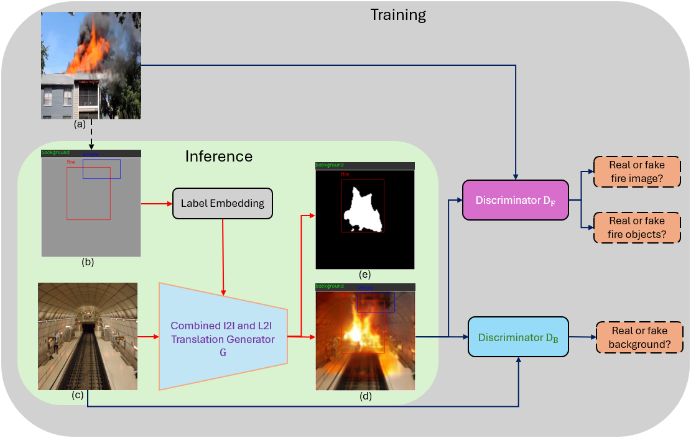
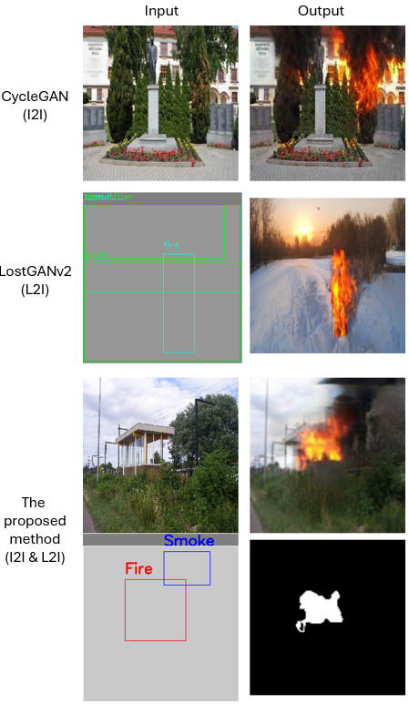
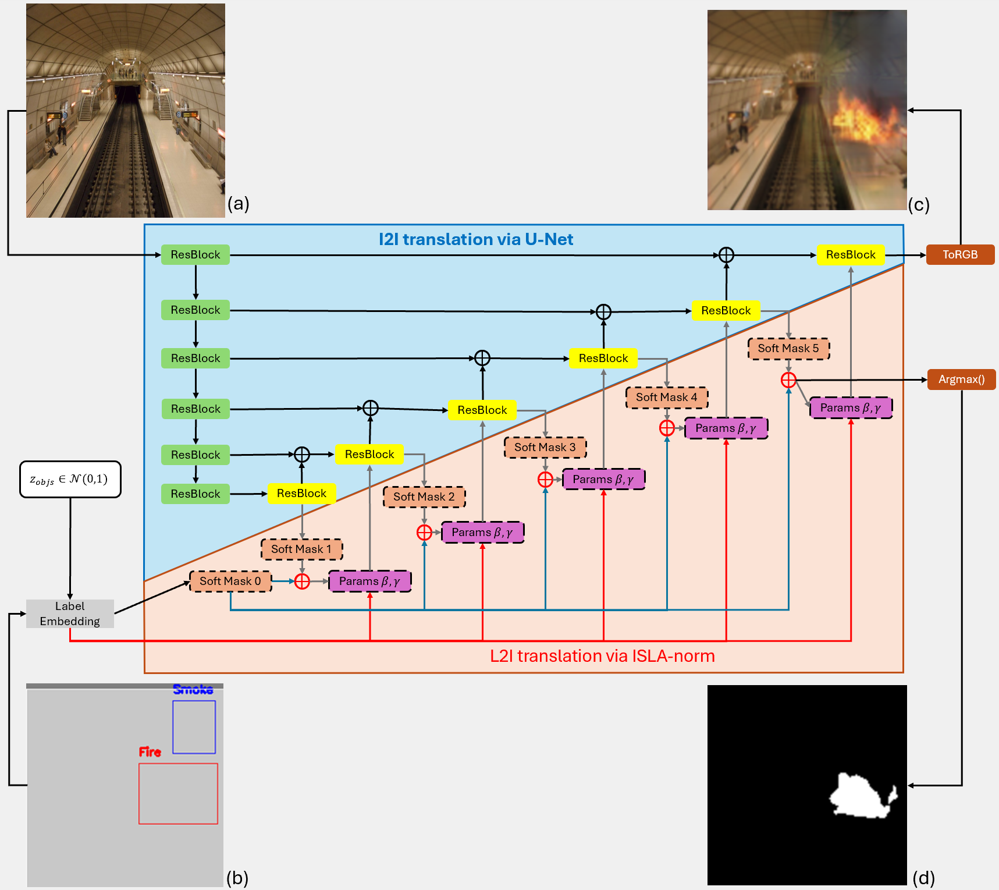
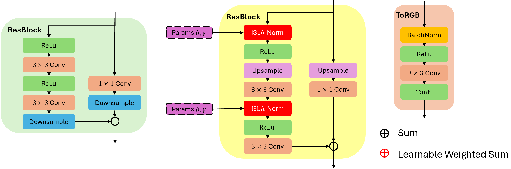
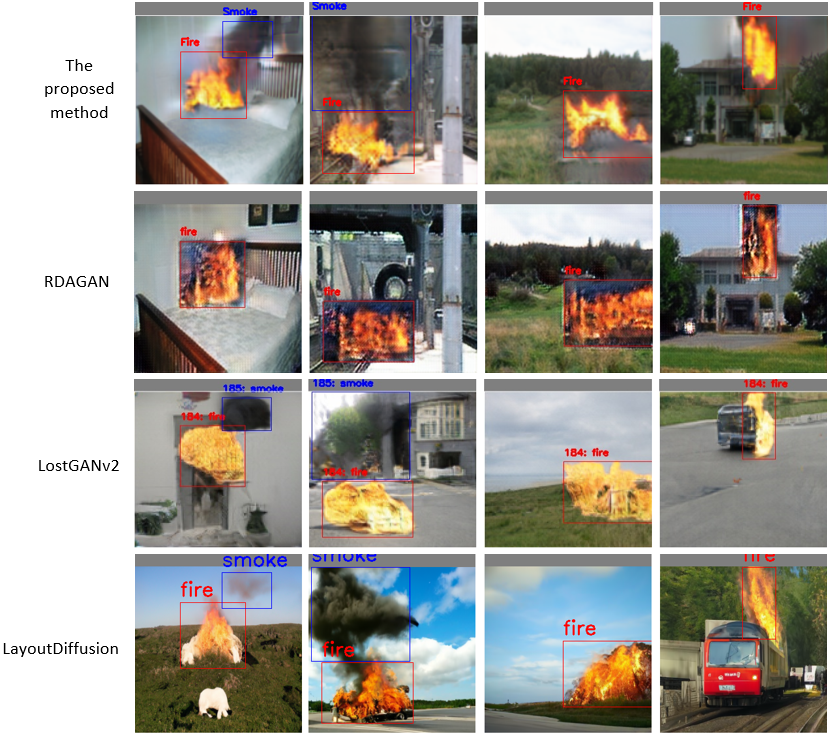
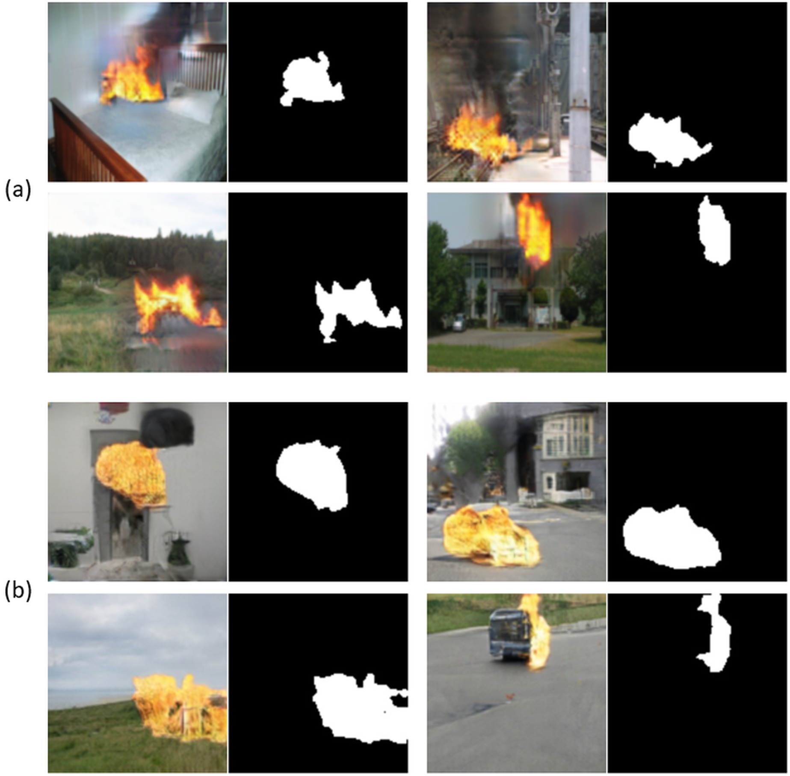

ACADEMIC · IVPG LAB, SEJONG UNIVERSITY
GAN-based Layout-Guided Fire Image & Mask Generation
Architecture
Real fire data is unsafe to collect at scale, so this project generates it instead: photorealistic fire/smoke images composited into arbitrary background scenes at user-specified locations, with a pixel-aligned segmentation mask produced automatically — no manual annotation.

The design combines two translation mechanisms rather than relying on either alone:
- Image-to-Image (I2I) translation via a U-Net, which preserves the real background scene.
- Layout-to-Image (L2I) translation via ISLA-norm (instance-sensitive, layout-aware normalization), which places fire/smoke exactly where the input boxes specify.

Each ResBlock in the generator carries two parallel paths — a plain path for the I2I branch and an ISLA-norm-conditioned path for the L2I branch — fused by a learnable weighted sum at every resolution, then decoded to an RGB image (via ToRGB) and a mask (via Argmax over per-class soft masks):


Two discriminators keep the generator honest: DF scores whole-image and per-object realism (via an image classifier and an RoIAlign-based object classifier), while DB checks that the non-fire background regions stay reconstructed faithfully (L1 + adversarial loss).
Full implementation: github.com/hxnghia99/LostGAN_Research
Demo
Qualitative comparison against prior layout-conditioned generators on the same input layouts and backgrounds:

Generated fire images paired with their automatically-produced segmentation masks, across varied scenes and fire shapes:

Performance
The proposed method reaches 68.73 FID, ahead of RDAGAN, LostGANv2, and PaintByExample, and close behind LayoutDiffusion (64.89) — at a fraction of its inference cost. Training-data augmentation with the generated images improves both downstream detection and segmentation over every baseline.
| Method | FID |
|---|---|
| RDAGAN | 95.24 |
| LostGANv2 | 75.15 |
| PaintByExample | 73.52 |
| LayoutDiffusion | 64.89 |
| Proposed method | 68.73 |
| Augmentation | Training set | mAP | AP (fire) | AP (smoke) |
|---|---|---|---|---|
| None | vanilla set | 58.8 | 67.9 | 49.7 |
| None | vanilla + 3,040 non-fire | 59.4 | 68.9 | 49.8 |
| RDAGAN | vanilla + 4,000 synthetic | 60.2 | 70.1 | 50.3 |
| LostGANv2 | vanilla + 4,000 synthetic | 61.2 | 71.1 | 51.3 |
| LayoutDiffusion | vanilla + 4,000 synthetic | 62.2 | 72.5 | 51.9 |
| Proposed method | vanilla + 4,000 synthetic | 63.4 | 73.5 | 53.2 |
| Augmentation | Training set | mIoU | Dice |
|---|---|---|---|
| None | vanilla set | 75.68 | 85.02 |
| None | vanilla + 1,000 non-fire | 75.87 | 85.29 |
| LostGANv2 | vanilla + 1,000 synthetic | 77.91 | 86.61 |
| Proposed method | vanilla + 1,000 synthetic | 80.12 | 88.39 |
| Method | Training Time (h) | Inference (ms) | GFLOPs | GPU |
|---|---|---|---|---|
| RDAGAN | 6.6 | 17.6 | 2.3 | RTX 3090 |
| LostGANv2 | 36.2 | 21.2 | 13.2 | RTX 3090 |
| LayoutDiffusion | 66.4 | 4368.7 | 10.2 × 50 | A100 |
| PaintByExample | 19.8 | 3174.2 | 22.4 × 50 | A100 |
| Proposed method | 22.1 | 21.3 | 29.7 | RTX 3090 |
Evidence
Code, model definitions, and training/testing/FID scripts are in the project repository:
- hxnghia99/LostGAN_Research — full repository (
model/,data/,utils/,train.py,test.py,fid_compute.py) - Requires Python 3.9, PyTorch 1.13.1, CUDA 11.6.3, cuDNN 8.4.1
Published as: X.N. Huynh and J.K. Suhr, “Fire Image Generation Based on Image-to-Image and Layout-to-Image Translations for Detection and Segmentation Tasks,” IEEE Access, 2026.